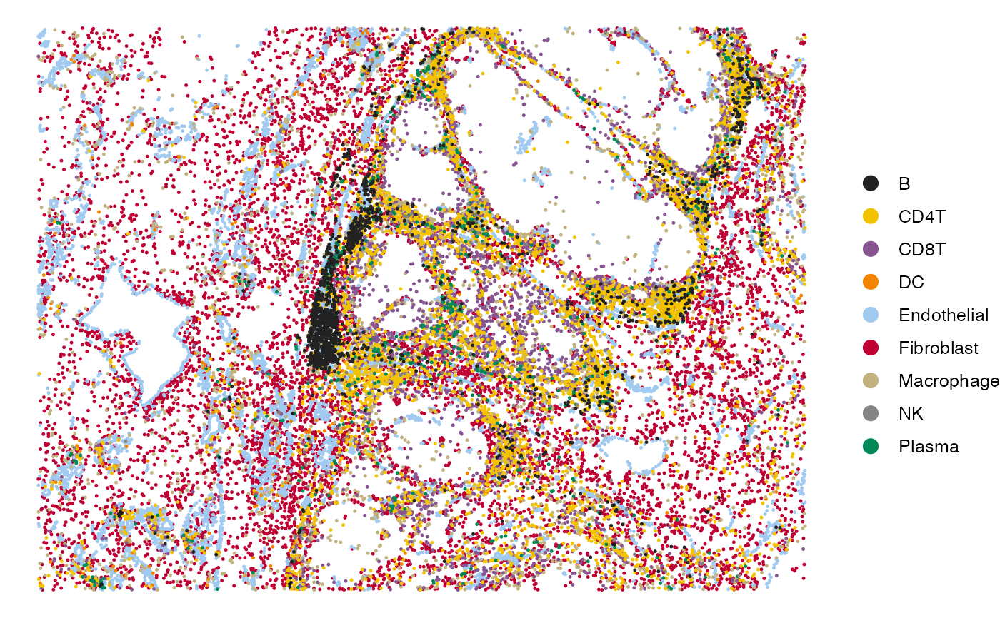
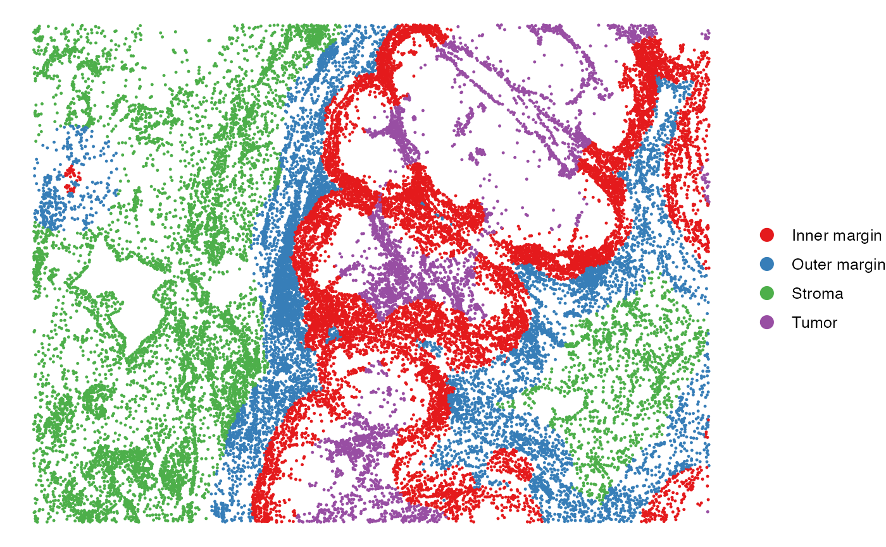

Visualize Spatial Landscape of Cells / Spots
SpatialView.RdVisualize Spatial Landscape of Cells / Spots
Usage
SpatialView(
obj,
by,
X = "X",
Y = "Y",
pt.shape = 20,
pt.size = 0.5,
pt.alpha = 1,
jitter = FALSE,
slot = "data",
coord.fix = FALSE,
highlight.cells = NULL,
control.cells = NULL,
ncol = 3,
bg.downsample = 2000,
bg.color = "gray80",
bg.size = 0.5,
bg.alpha = 0.7
)Arguments
- obj
A Seurat object or a data frame (with cell names as row names).
- by
A feature name for plotting, e.g. cell type, region, gene expression.
- X
A character specifying the spatial coordinate of x-axis.
- Y
A character specifying the the spatial coordinate of y-axis.
- pt.shape
Point shape for plotting
- pt.size
A numeric specifying the point size of non-control cells.
- pt.alpha
A numeric specifying the point transparency of non-control cells.
- jitter
A boolean specifying whether add jitters to the cells.
- slot
The slot in Seurat object to pull feature from.
- highlight.cells
A vector specifying the cells for highlighting.
- control.cells
A vector specifying the control cells as background. If not specified, all the non-highlighting cells will be considered as control.cells.
- bg.downsample
An integer specifying the aim for downsampling the control.cells.
- bg.color
Color of control cells.
- bg.size
A numeric specifying the point size of control cells.
- bg.alpha
A numeric specifying the point transparency of control cells.
Examples
library(data.table)
library(Seurat)
library(SpatialEcoTyper)
library(ggplot2)
library(googledrive)
drive_deauth() # no Google sign-in is required
drive_download(as_id("1CgUOQKrWY_TG61o5aw7J9LZzE20D6NuI"),
"HumanMelanomaPatient1_subset_scmeta.tsv", overwrite = TRUE)
#> File downloaded:
#> • HumanMelanomaPatient1_subset_scmeta.tsv
#> <id: 1CgUOQKrWY_TG61o5aw7J9LZzE20D6NuI>
#> Saved locally as:
#> • HumanMelanomaPatient1_subset_scmeta.tsv
scmeta <- fread("HumanMelanomaPatient1_subset_scmeta.tsv",
sep = "\t",header = TRUE, data.table = FALSE)
# Visualize the cell type annotations in the tissue
SpatialView(scmeta, by = "CellType", X = "X", Y = "Y") +
scale_color_manual(values = pals::kelly()[-1])
#> Scale for colour is already present.
#> Adding another scale for colour, which will replace the existing scale.

SpatialView(scmeta, by = "Region", X = "X", Y = "Y") +
scale_color_brewer(type = "qual", palette = "Set1")
#> Scale for colour is already present.
#> Adding another scale for colour, which will replace the existing scale.
